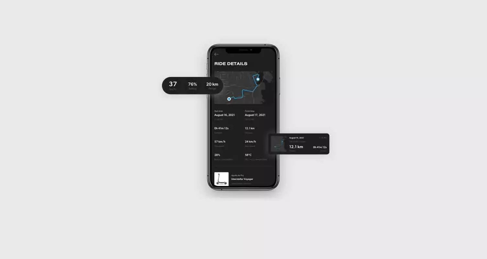
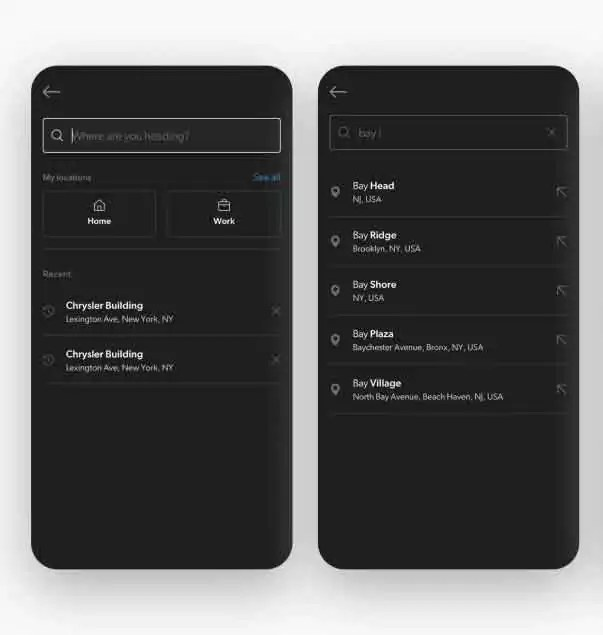
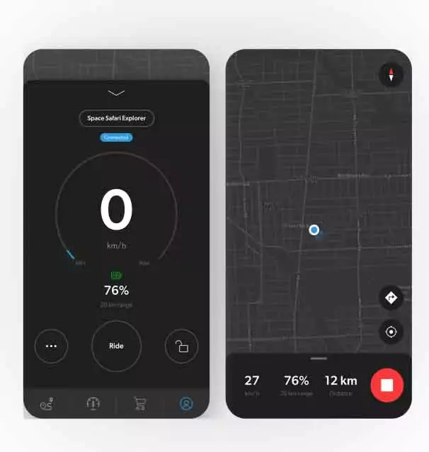

Apollo Scooters:
Selling a Vehicle Online
Shopify Storefront · Companion Mobile App · Purchase Journey
An electric scooter is not an impulse buy. It is a vehicle, bought sight unseen, from a website. Apollo needed a new Shopify storefront and a companion mobile app, and my job was making sure both were built around how people actually decide to buy one.
01The brief I was handed
Apollo Scooters is a Canadian electric-scooter brand, and the engagement was two builds at once: a new Shopify storefront and a companion mobile app, with one word doing the heavy lifting in the brief: engagement. People visited, browsed specs, and left. The ask wasn't a prettier catalog. It was a digital presence that could carry someone from curiosity to a four-figure vehicle purchase without a showroom, a test ride, or a salesperson.

The new storefront: a vehicle purchase, carried entirely by the screen.
02My part
I owned the research read. Market research first: where the e-scooter category was heading and what competitors made easy or painful. Then the buyer side, through surveys and usability tests, watching how people actually shop for an e-scooter. The pattern that mattered: this is a comparison-heavy, high-consideration purchase. Buyers bounce between models, ranges, and prices, and every moment the site made that comparison harder, it lost a rider it had almost convinced.
I turned the research into the design brief. The findings became the spec the design team worked from: a design system with style guides, color decisions, and microinteractions defined once and reused everywhere, so the storefront and the app felt like one brand instead of two projects. Consistency isn't cosmetic on a purchase this size; a buyer sizing up a vehicle reads sloppiness as risk.
I specced the journey, not just the pages. The path from first visit to purchase, and the moments in between: where a hesitant buyer needed a well-placed CTA, where a form could capture a lead the brand could follow up with, and how the mobile app extended the relationship past the sale. Lead generation was designed into the flow, not bolted on as a popup.

The research phase: market trends, competitor moves, and buyer behavior, forced to agree before design started.
03How we shipped it
The build was the studio team's craft: designers took the system through the storefront and the app layouts, engineers wired the Shopify build and the cross-platform app. My lane was the one I ran on every engagement: keeping each screen traceable to something the research said, holding the responsive behavior to the same standard on a phone as on a desktop, and pushing back when a flourish threatened the journey. The result was an interface that engages because it answers the buyer's next question, not because it moves.


One design system across the storefront and the companion app: defined once, reused everywhere.
04What moved
The engagement's reported outcomes:
Those are the engagement's numbers, and a full studio team earned them. The part that was mine: the research those designs answered to, the design-system brief, and the shape of the journey from first visit to purchase.
05What it taught me
Selling a vehicle online is a trust problem wearing an e-commerce costume. Nobody buys a four-figure machine from a site that feels improvised, which is why the design system mattered as much as any feature. And engagement is not a mood, it is placement: the CTA at the moment of hesitation, the form where curiosity peaks, the comparison made effortless. It is the same funnel discipline I ran at Currys, pointed at a very different machine. This was also my only run at an EV product, and it taught me how differently people buy when the thing arriving in the box has wheels.